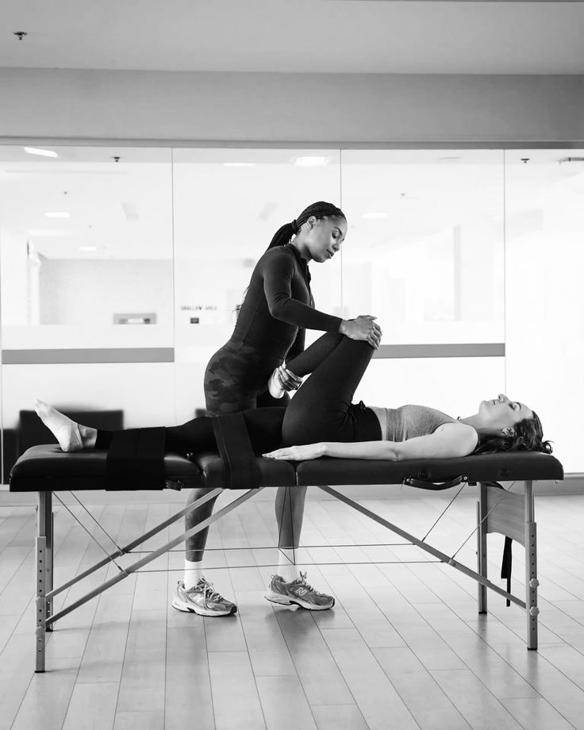
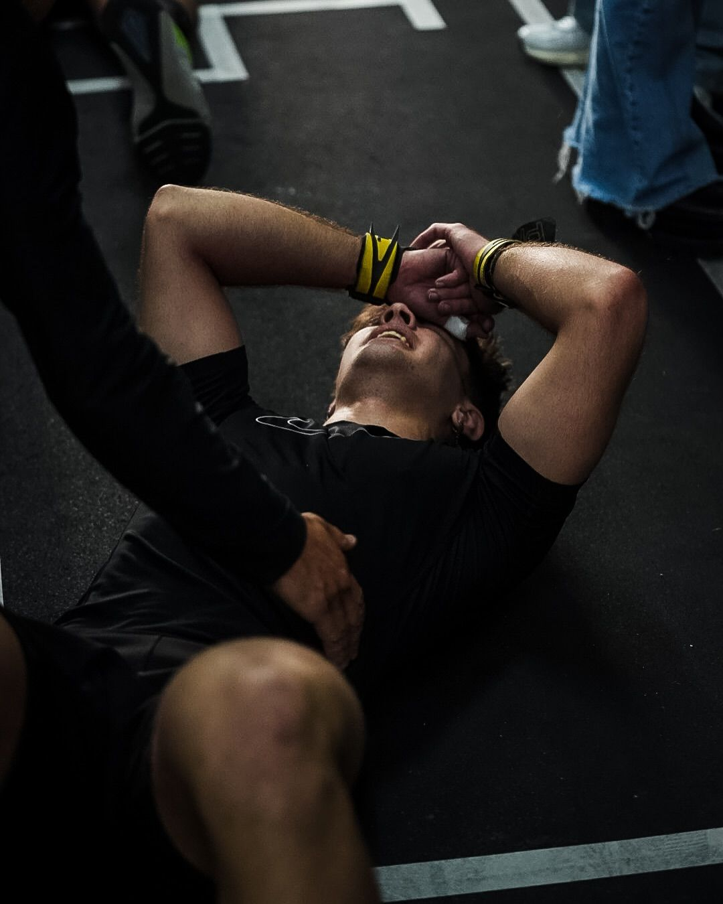

Volver a entrenar
Después de una lesión o tiempo sin actividad, retomar tu rutina requiere un protocolo específico. En SENZA te acompañamos en cada paso.
Ver protocoloBajar dolor
El dolor limita tu potencial. Nuestros protocolos están diseñados para aliviar molestias agudas y crónicas, mejorando tu calidad de vida.
Ver protocolo
Recuperarte más rápido
Optimiza tu recuperación post-entrenamiento con herramientas científicas que aceleran el proceso de restauración muscular.
Ver protocoloRendí mejor
La recuperación es parte del entrenamiento. Mejora tu rendimiento deportivo con protocolos de alto rendimiento.
Ver protocoloPrevenir lesiones
Es mejor prevenir que curar. Fortalece tu cuerpo y evita futuras lesiones con nuestros programas preventivos.
Ver protocoloPor qué SENZA
Ciencia aplicada
Protocolos basados en evidencia científica para máxima efectividad
Personalizado
Cada plan está diseñado específicamente para tus necesidades
Resultados reales
Historias de atletas que volvieron a su máximo rendimiento